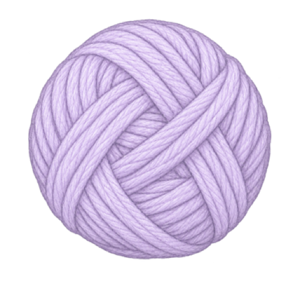
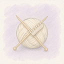
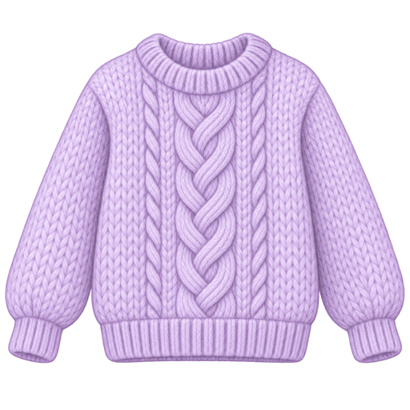

毛线，收得明明白白
照片、颜色和材质放在一起，找线、配线都方便。


KnitMemo整理毛线，记录进度，收藏亲手完成的作品。
照片、颜色和材质放在一起，找线、配线都方便。

打开项目接着织，用计数器记进度，用照片记下今天。
记下成品照片和毛线用量，随时回看一路织来的日常。

先在「毛线」里收好线材，再点「＋」创建项目，就可以开始记录。
在「设置」导出 ZIP 备份；在另一台设备的织记里选择「导入备份」即可。
可以。在新建项目或编辑项目资料时导入 PDF，之后就能在项目中打开。
进入「设置 → App 语言」，选择简体中文或 English。
遇到了问题，或是有个好点子？来告诉我。
在 GitHub 留言